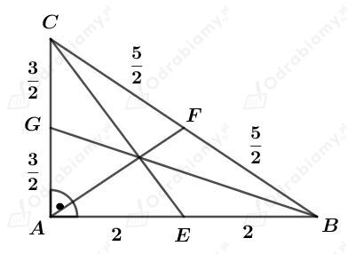
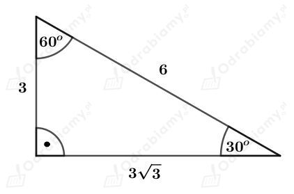
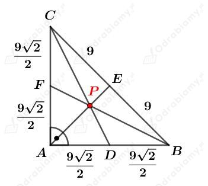
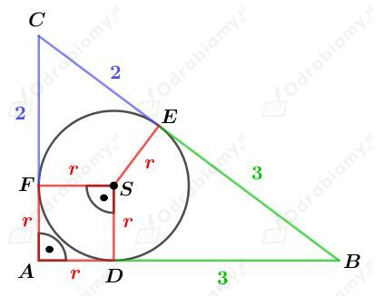

a)
Dany jest trójkąt prostokątny ABC o kącie prostym przy wierzchołku C. Odcinek CD jest wysokością tego trójkąta.
Rozważmy trójkąt DBC. Wiedząc, że suma miar kątów w dowolnym trójkącie wynosi 180o mamy:
Skoro kąt przy wierzchołku C jest kątem prostym, to
b)
Dany jest trójkąt prostokątny ABC o kącie prostym przy wierzchołku C. Odcinek AD jest zawarty jest w dwusiecznej kąta CAB. Mamy więc:
Rozważmy trójkąt ABC. Wiedząc, że suma miar kątów w dowolnym trójkącie wynosi 180o mamy:
Rozważmy trójkąt ADC. Wiedząc, że suma miar kątów w dowolnym trójkącie wynosi 180o mamy:
c)
Dany jest trójkąt prostokątny ABC o kącie prostym przy wierzchołku C. Odcinek CD jest środkową w tym trójkącie.
Wiedząc, że w trójkącie prostokątnym środkowa poprowadzona z wierzchołka kąta prostego jest promieniem okręgu opisanego na tym trójkącie mamy:
Trójkąt BCD jest trójkątem równoramiennym, więc
Skoro kąt przy wierzchołku C jest kątem prostym, to
a)
Dany jest trójkąt prostokątny o przyprostokątnych długości a=3 i b, oraz o przeciwprostokątnej długości c.
Wysokość opuszczona na przeciwprostokątną ma długość √5.
Pole tego trójkąta możemy zapisać na dwa różne sposoby:
Stąd otrzymujemy równanie:
Korzystając z twierdzenia Pitagorasa dla tego trójkąta otrzymujemy:
czyli
b)
Dany jest trójkąt prostokątny o przyprostokątnych długości a=3 i b, oraz o przeciwprostokątnej długości c.
Środkowa wychodząca z wierzchołka kąta prostego ma długość 2,5.
Wiedząc, że w trójkącie prostokątnym środkowa poprowadzona z wierzchołka kąta prostego jest promieniem okręgu opisanego na tym trójkącie mamy:
Korzystając z twierdzenia Pitagorasa dla tego trójkąta otrzymujemy:
c)
Dany jest trójkąt prostokątny o przyprostokątnych długości a=3 i b, oraz o przeciwprostokątnej długości c.
Odcinek dwusiecznej kąta prostego zawarty w tym trójkącie ma długość 2√2.
Wyznaczmy pole tego trójkąta. Mamy:
Zapiszmy pole tego trójkąta jako sumę pól trójkątów, na które podzieliła go dwusieczna. Mamy:
Przyrównując otrzymane pola mamy:
Korzystając z twierdzenia Pitagorasa dla tego trójkąta otrzymujemy:
Dany jest trójkąt prostokątny ABC, którego przyprostokątne mają długości 3 cm i 4 cm.
Wyznaczmy długość przeciwprostokątnej BC. Korzystając z twierdzenia Pitagorasa mamy:
a)
Rysunek:

Punkty E, F i G są - odpowiednio - środkami boków AB, BC i CA trójkąta ABC.
Punkt F jest środkiem okręgu opisanego na trójkącie ABC, zatem
Wyznaczmy długość środkowej BG. Korzystając z twierdzenia Pitagorasa dla trójkąta ABG otrzymujemy:
Wyznaczmy długość środkowej CE. Korzystając z twierdzenia Pitagorasa dla trójkąta AEC otrzymujemy:
b)
Niech hc będzie długością wysokości opuszczonej na przeciwprostokątną BC tego trójkąta.
Obliczmy pole tego trójkąta. Mamy:
Z drugiej strony, pole tego trójkąta możemy zapisać jako:
Porównując otrzymane pola, otrzymujemy równanie:
c)
Wyznaczymy długość odcinka AD (rysunek w podręczniku).
Zauważmy, że
Z podpunktu b) wiemy, że pole trójkąta ABC wynosi 6, więc mamy:
Dany jest trójkąt, którego dwa boki mają długości 3√3 i 6, a kąt między nimi zawarty ma miarę 30o.
a)
Obliczmy pole tego trójkąta. Mamy:
b)
Dwa boki mają długości 3√3 i 6, a kąt między nimi zawarty ma miarę 30o, czyli podany trójkąt jest trójkątem prostokątnym o kątach miary 30o, 60o, 90o.
Rysunek:

Korzystając ze związku między długościami boków w trójkącie o kątach 30o, 60o, 90o wiemy, że długość drugiej przyprostokątnej wynosi 3.
Jedna z wysokości tego trójkąta ma długość 3, a druga ma długość 3√3.
Niech hc będzie długością wysokości opuszczonej na przeciwprostokątną BC tego trójkąta.
Z podpunktu a) wiemy, że pole tego trójkąta wynosi:
Z drugiej strony, pole tego trójkąta możemy zapisać jako:
Porównując otrzymane pola, otrzymujemy równanie:
Odp. Wysokości tego trójkąta mają długości 3, 3√3 oraz 3√3/2.
Dany jest trójkąt prostokątny równoramienny o przeciwprostokątnej długości 18 cm.
Niech a będzie długością przyprostokątnych tego trójkąta. Mamy stąd:
Rysunek:

Punkty D, E i F są - odpowiednio - środkami boków AB, BC i CA trójkąta ABC.
Punkt E jest środkiem okręgu opisanego na trójkącie ABC, zatem
Środkowe CD oraz BF mają takie same długości, ponieważ trójkąt ABC jest trójkątem równoramiennym.
Wyznaczmy długość środkowej CD. Korzystając z twierdzenia Pitagorasa dla trójkąta ADC otrzymujemy:
więc również
Wyznaczmy sumę odległości punktu P od wierzchołków tego trójkąta.
Korzystając z faktu, że środkowe trójkąta przecinają się w stosunku 2:1 licząc od wierzchołka mamy:
Rysunek:

Wyjaśnienie:
Korzystając z twierdzenia o odcinkach stycznych mamy:
Korzystając z twierdzenia Pitagorasa dla trójkąta ABC mamy:
czyli
więc
oraz